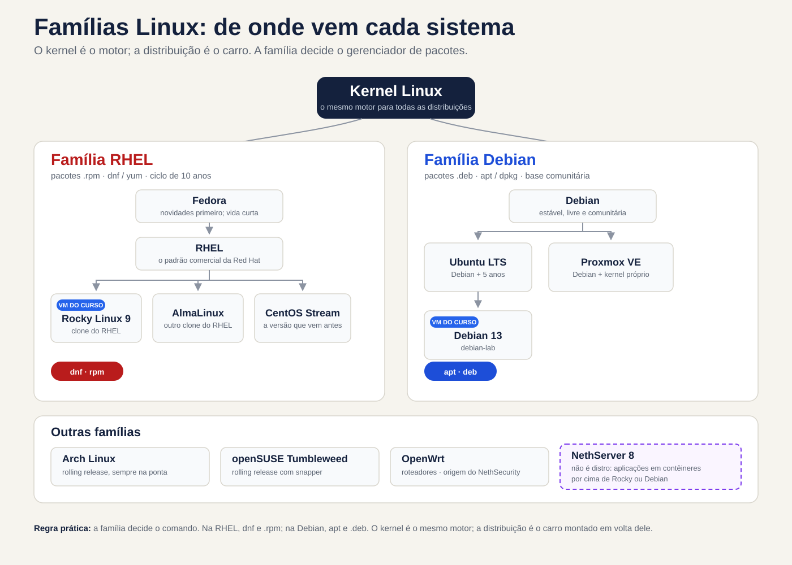
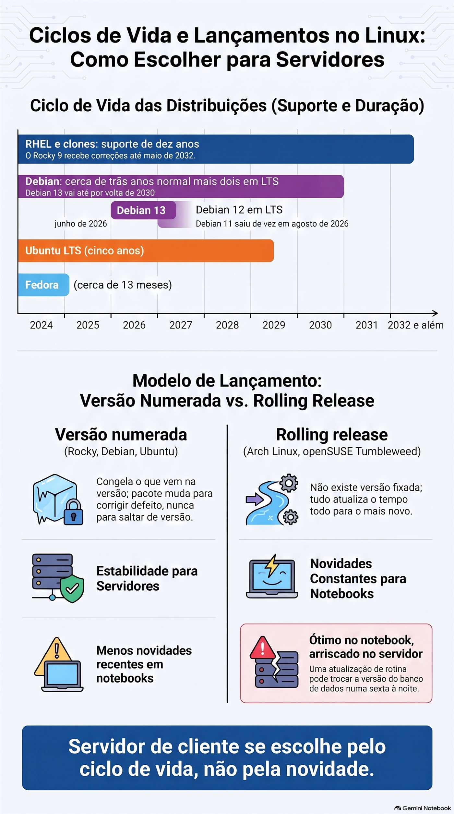
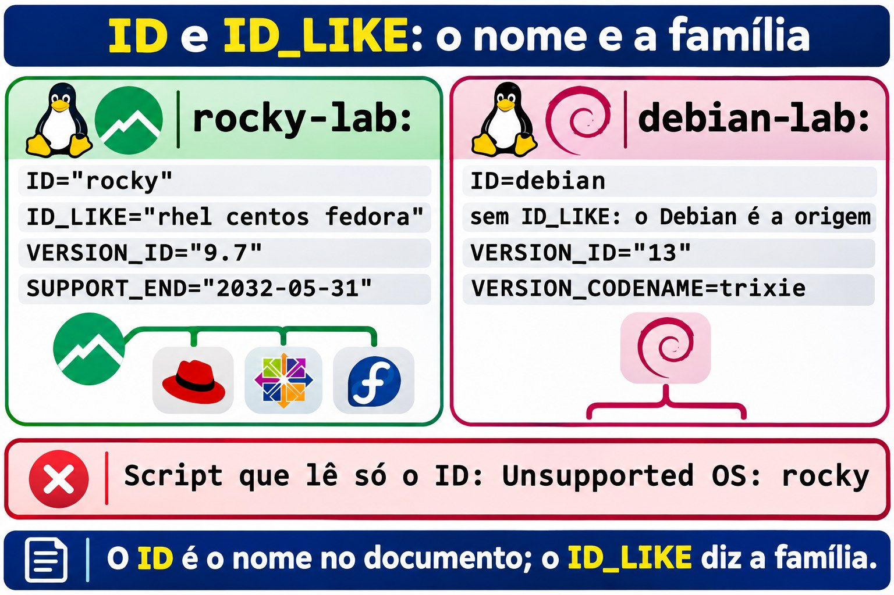
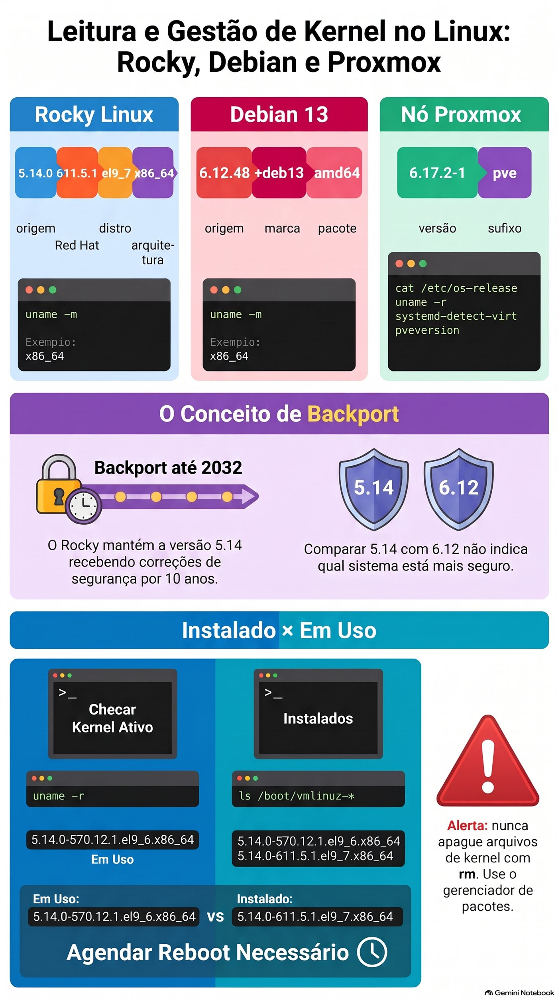
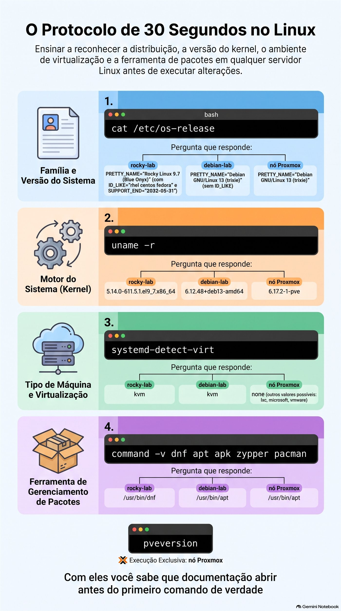

Aula 1.1 · O que é Linux
Você separa de vez kernel, distribuição e família, identifica qualquer Linux em 30 segundos e coloca no mapa os sistemas que o curso usa: Proxmox, NethServer 8 e NethSecurity.
| Ficha | Aula 1.1 |
|---|---|
| Módulo | M1 · Linha de comando, aula 1 de 10 |
| Quando | Semana 1 |
| Ao final você consegue | Separar kernel, distribuição e família; dizer família, versão, kernel e ciclo de vida de qualquer Linux em 30 segundos; ler uma versão de kernel peça por peça; situar Proxmox, NethServer 8 e NethSecurity na árvore das distribuições |
| Pré-requisitos | M0 completo: ssh rocky-lab e ssh debian-lab funcionando |
| Tempo | Cerca de 2h |
| Snapshots | m1a1-inicio e m1a1-fim nas duas VMs |
1 · Aquecimento
Três perguntas, de cabeça, antes de ler qualquer coisa. Escreva as respostas; o Gabarito confere no fim.
- O Windows Server 2025 e o Windows 11 24H2 têm o mesmo número de build, 26100. São o mesmo sistema?
- Sem entrar nas VMs: que distribuição e que versão rodam na rocky-lab e na debian-lab? O kernel das duas é o mesmo?
- O Proxmox VE é Linux? Se for, que distribuição está por baixo?
2 · Por que importa
Um cliente abre um chamado: o servidor de arquivos "parou de atualizar". Você entra por SSH, digita sudo apt update e recebe command not found. Pesquisa o erro, acha uma resposta escrita para Ubuntu, tenta, não funciona. Vinte minutos depois descobre que a máquina é um CentOS 7. A família é outra, o gerenciador de pacotes é outro, e o problema nem é de comando: o CentOS 7 parou de receber atualizações em junho de 2024. Não há nada a consertar no terminal. Há uma migração a propor.
Com o protocolo desta aula, a mesma história leva 30 segundos. Um comando diz a família e a versão, e com elas vem o resto: que documentação ler, que comando usar e se o caso é um ajuste ou um projeto.
Para quem atende servidores de vários clientes, isso pesa ainda mais. Cada servidor foi instalado por alguém diferente, numa época diferente. Só nos sistemas que o curso usa, Proxmox, NethServer e NethSecurity, convivem três famílias de Linux, e cada uma tem a sua data de fim de suporte.
3 · Modelo mental
Linux é o motor; a distribuição é o carro.
O kernel Linux é o motor. Ele fala com o hardware, divide a CPU e a memória entre os programas, controla discos e rede. Sozinho, não leva ninguém a lugar nenhum, como um motor numa bancada. A distribuição é o carro montado em volta dele: o shell, os comandos, o instalador, o gerenciador de pacotes, as configurações de fábrica e, principalmente, a promessa de manutenção, que diz por quantos anos aquele carro recebe peças e recall.
Várias montadoras usam o mesmo motor. A Red Hat, a comunidade Debian, a Canonical e a Proxmox pegam o mesmo kernel Linux e montam carros bem diferentes. E as montadoras formam famílias: o Rocky é praticamente o mesmo carro que o RHEL, e o Ubuntu nasceu de um Debian e conserva a mecânica dele.


Leia o diagrama por linhas. Cada linha é uma família, e a família decide o que você digita: dnf e pacotes .rpm na primeira, apt e pacotes .deb na segunda. As setas mostram de onde cada sistema nasce, e os dois quadros em destaque são as VMs do curso. O NethServer 8 tem borda tracejada porque não é uma distribuição: é um conjunto de aplicações que se instala por cima de um Rocky ou de um Debian. E o NethSecurity nem está nas duas primeiras linhas: vem do OpenWrt, uma família feita para roteadores.
Ponte Windows: você já conhece esse modelo. O Windows Server 2025 e o Windows 11 24H2 usam o mesmo núcleo, da build 26100, e são produtos diferentes, com outras funções, outra licença e outro ciclo de suporte. A diferença é que no Windows só a Microsoft monta carros com esse motor. No Linux qualquer um pode montar, porque o código do kernel é aberto. Por isso existem centenas de distribuições, e por isso o Rocky pode existir como cópia gratuita do RHEL.
4 · Conceito em camadas
Essencial
| Termo | O que é | Onde você vê |
|---|---|---|
| Kernel | O núcleo: fala com o hardware e divide CPU, memória, disco e rede entre os programas | uname -r; o mesmo Linux roda no Proxmox, na rocky-lab e no seu celular Android |
| Userspace | Tudo o que roda fora do kernel: shell, comandos, serviços | bash, sshd, dnf |
| Distribuição | Kernel, programas, gerenciador de pacotes, instalador e uma política de versões e de suporte | Rocky, Debian, Ubuntu, Proxmox VE |
| Família | Distribuições que nascem da mesma origem e usam o mesmo formato de pacote | Red Hat (dnf, .rpm) e Debian (apt, .deb) |
| Ciclo de vida | Por quanto tempo a distribuição recebe correções de segurança | Rocky 9 até maio de 2032; CentOS 7 acabou em junho de 2024 |
| Backport | Correção de uma versão nova aplicada a uma versão antiga | O kernel 5.14 do Rocky, com correções de 2026 |
| Versão numerada ou rolling | Versões que congelam e só recebem correção, ou atualização contínua para o mais novo | Debian e Rocky; Arch e openSUSE Tumbleweed |
| Software livre | Código que qualquer um pode ler, mudar e redistribuir; o kernel usa a licença GPL versão 2 | É o que permite existir um Rocky gratuito ao lado do RHEL |
Ponte Windows: o gerenciador de pacotes é o Windows Update da distribuição, só que para tudo: sistema, serviços e programas vêm do mesmo repositório. Por isso a família importa tanto. O dnf não existe num Debian, e o apt não existe num Rocky.
Aprofundamento
Linux ou GNU/Linux. Em 1991, Linus Torvalds escreveu o kernel. Os comandos básicos, o compilador e boa parte do resto vieram do projeto GNU, que já existia. Por isso o Debian se chama Debian GNU/Linux. O Android usa o kernel Linux quase sem nada do GNU, e o roteador da sua casa provavelmente também roda Linux. Na documentação, "Linux" às vezes quer dizer só o kernel; leia o contexto com isso em mente.
A cadeia da Red Hat. Desde 2021, o caminho é Fedora, depois CentOS Stream, depois RHEL. O Stream virou a prévia do próximo RHEL e deixou de ser a cópia gratuita. Esse papel passou para o Rocky Linux e o AlmaLinux. Em 2023 a Red Hat restringiu a publicação do código do RHEL; o Rocky continuou reconstruindo o RHEL por outros caminhos, e o AlmaLinux passou a prometer compatibilidade em vez de cópia idêntica. No dia a dia, os dois se comportam como o RHEL.
Lendo a versão do kernel. Um kernel do Rocky como 5.14.0-611.5.1.el9_7.x86_64 se lê em quatro pedaços; o seu terá outros números no meio. 5.14.0 é a versão de origem, lançada pela comunidade do kernel em 2021. 611.5.1 é a compilação da Red Hat, que sobe a cada correção. el9_7 quer dizer Enterprise Linux 9, versão 9.7. x86_64 é a arquitetura. No Debian 13, algo como 6.12.48+deb13-amd64 traz a mesma ideia em outro formato: a versão de origem, a marca do Debian 13 e a arquitetura, que o Debian chama de amd64.
Por que o Rocky fica no 5.14 até 2032. A Red Hat congela a versão de origem no começo do RHEL 9 e, durante dez anos, traz para ela as correções de segurança e muitos drivers das versões novas. É o backport. O ganho é previsibilidade: um programa homologado no RHEL 9.0 continua funcionando no 9.7. Por isso, comparar 5.14 com 6.12 não diz qual é mais seguro. O que diz é a data do último pacote de kernel instalado e se ele é o que está rodando.
Versões numeradas e rolling release. Rocky, Debian e Ubuntu lançam versões numeradas e congelam o que vem nelas: dentro do Debian 13, um pacote muda para corrigir defeito, nunca para saltar de versão. Numa rolling release, como o Arch Linux ou o openSUSE Tumbleweed, não existe versão: tudo atualiza o tempo todo para o mais novo. Ótimo no notebook de quem gosta de novidade; arriscado no servidor de um cliente, onde uma atualização de rotina pode trocar a versão do banco de dados numa sexta à noite.
Ciclo de vida é o número que importa. O RHEL e os seus clones têm dez anos: o Rocky 9 recebe correções até maio de 2032. O Debian dá cerca de três anos de suporte normal e mais dois de LTS: o Debian 13 vai até por volta de 2030, o Debian 12 está em LTS desde junho de 2026, e o Debian 11 saiu de vez em agosto de 2026. O Ubuntu LTS tem cinco anos, e a Canonical vende mais anos à parte. O Fedora vive cerca de 13 meses por versão. Servidor de cliente se escolhe pelo ciclo de vida, não pela novidade.
Os sistemas que o curso usa. O Proxmox VE 9 é um Debian 13 com as ferramentas da Proxmox e um kernel próprio, derivado do kernel do Ubuntu: quase tudo que você aprender na debian-lab vale no nó. O NethServer 8 não é distribuição: são aplicações em contêineres que se instalam sobre um Rocky Linux ou um Debian. O NethServer 7 era um CentOS 7 com a interface da Nethesis. O NethSecurity vem do OpenWrt, que nasceu para roteadores e tem as próprias ferramentas de pacote.


5 · Rocky × Debian
| O que | rocky-lab | debian-lab |
|---|---|---|
| Família | Red Hat | Debian |
ID no /etc/os-release | rocky | debian |
ID_LIKE | rhel centos fedora | Não existe: o Debian é a origem da família |
| Arquivo extra de versão | /etc/redhat-release e /etc/rocky-release | /etc/debian_version |
| Kernel | 5.14.0-…el9_….x86_64, congelado e com backports | 6.12.…+deb13-amd64 |
| Gerenciador de pacotes | dnf, pacotes .rpm | apt, pacotes .deb |
Pacote dono do os-release | rocky-release | base-files |
| Verificar se o pacote foi alterado | rpm -V rocky-release | dpkg --verify base-files |
| Fim do suporte | Maio de 2032, escrito no próprio os-release | Por volta de 2030, contando o LTS; não vem no arquivo |
6 · Lab guiado
Neste lab você monta o protocolo de 30 segundos: quatro comandos que dizem família, versão, kernel e tipo de máquina de qualquer Linux que cair na sua mão. Tudo aqui é leitura, menos os snapshots. Deixe dois terminais abertos, um em cada VM.
Ao longo dos passos aparecem blocos Decida: uma situação, quatro alternativas e uma tabela que explica cada uma, certa ou errada. Os marcados como cenário descrevem coisas que não acontecem sozinhas no lab, mas acontecem no seu trabalho.
Passo 1 · Snapshot de início
No shell do nó Proxmox onde estão as VMs, como nas aulas do M0:
qm snapshot 201 m1a1-inicio --description "Aula 1.1, antes do lab"
qm snapshot 202 m1a1-inicio --description "Aula 1.1, antes do lab"
qm listsnapshot 201Saída esperada: a árvore mostra m0a2-fim, depois m1a1-inicio e, por último, current com "You are here!". Se o qm responder que a VM não existe, você está no nó errado; a interface web mostra em qual nó cada VM roda.
Passo 2 · O documento de identidade: /etc/os-release
ssh rocky-lab
cat /etc/os-releaseSaída esperada (trecho; o número depois do 9. depende de quando você instalou e atualizou):
NAME="Rocky Linux"
VERSION="9.7 (Blue Onyx)"
ID="rocky"
ID_LIKE="rhel centos fedora"
VERSION_ID="9.7"
PRETTY_NAME="Rocky Linux 9.7 (Blue Onyx)"
SUPPORT_END="2032-05-31"Preveja: antes de rodar o mesmo comando na debian-lab, responda: vai existir uma linha ID_LIKE?
ssh debian-lab
cat /etc/os-releaseSaída esperada (trecho):
PRETTY_NAME="Debian GNU/Linux 13 (trixie)"
NAME="Debian GNU/Linux"
VERSION_ID="13"
VERSION="13 (trixie)"
VERSION_CODENAME=trixie
ID=debianNão existe ID_LIKE, nem SUPPORT_END. O Debian é a origem da família e não se parece com ninguém; um Ubuntu, que nasceu dele, traz ID_LIKE=debian. E trixie é o codinome do Debian 13. Os codinomes vêm dos personagens de Toy Story, e você vai encontrá-los em repositórios e fóruns tanto quanto o número.
Para saber: o /etc/os-release é um padrão do systemd que quase todas as distribuições adotaram, inclusive as que não usam systemd, como o OpenWrt. Por isso ele abre o protocolo. Quando quiser só as linhas que importam:
grep -E '^(ID|ID_LIKE|VERSION_ID)=' /etc/os-releaseDecida 1 · O instalador que não reconhece o Rocky. Cenário: um fornecedor manda um script de instalação que diz suportar "RHEL 9". No servidor de um cliente, um Rocky 9, o script para com Unsupported OS: rocky. O que você faz?
- A) Edita o
/etc/os-releasee trocaID="rocky"porID="rhel", para o script passar. - B) Lê a verificação do script e a documentação do fornecedor: muitos aceitam o
ID_LIKEou têm uma opção para distribuições compatíveis. Se não houver, pergunta ao fornecedor. - C) Roda o script com
sudo, porque o erro deve ser de permissão. - D) Conclui que o Rocky é incompatível com o RHEL e reinstala o servidor com Ubuntu.
Escolha a letra antes de olhar a tabela.
| Se você marcou | Resultado | Por quê |
|---|---|---|
| A | ❌ Errada | O arquivo pertence ao pacote rocky-release e volta ao original na próxima atualização. Até lá, inventários, scanners de vulnerabilidade e outros scripts enxergam um sistema que não existe. A seção 7 mostra como pegar essa mentira. |
| B | ✅ Certa | O Rocky é feito para se comportar como o RHEL, e o ID_LIKE="rhel centos fedora" existe para dizer isso. O defeito está num script que só lê o ID; a saída é usar o caminho que o fornecedor previu ou pedir que ele preveja. |
| C | ❌ Errada | A mensagem fala do sistema, não de permissão. Erro de permissão diz Permission denied. |
| D | ❌ Errada | O Ubuntu é de outra família, mais longe do RHEL que o Rocky. Você trocaria um problema de script por uma migração inteira. |
Para fixar: o ID é o nome no documento; o ID_LIKE diz de que família você é. O script que só lê o ID é o porteiro que barra o gêmeo porque o nome dele não está na lista.


Passo 3 · O motor: uname -r
Nas duas VMs:
uname -rSaída esperada: algo como 5.14.0-611.5.1.el9_7.x86_64 na rocky-lab e 6.12.48+deb13-amd64 na debian-lab. Leia peça por peça, como na seção 4. No Rocky: versão de origem, compilação da Red Hat, el9_7 e arquitetura. No Debian: versão de origem, a marca deb13 e amd64.
Preveja: o uname -m mostra só a arquitetura. Na debian-lab, ele vai dizer amd64 ou x86_64?
uname -mSaída esperada: x86_64 nas duas. O amd64 é só o nome que o Debian dá aos pacotes dessa arquitetura; o kernel sempre se apresenta como x86_64.
Decida 2 · O kernel "velho". Na sua frente, 5.14 na rocky-lab e 6.12 na debian-lab. Um colega diz que o Rocky está com o kernel três anos atrasado e sugere instalar um mais novo, de um repositório da internet. O que você faz?
- A) Concorda e instala o kernel novo de um repositório de terceiros.
- B) Não decide pelo número: confere se o pacote do kernel está atualizado e se o kernel em uso é o último instalado.
- C) Migra o servidor para Debian, que tem kernel mais novo.
- D) Roda
sudo dnf update kernel, que deve levar o Rocky para o 6.12.
Escolha a letra antes de olhar a tabela.
| Se você marcou | Resultado | Por quê |
|---|---|---|
| A | ❌ Errada | Você sai do kernel que a Red Hat testa junto com o resto do sistema e para de receber correções pelo dnf. Em servidor de cliente, é trocar o motor original por um de oficina. |
| B | ✅ Certa | Pelo backport, o 5.14 do Rocky recebe correções de segurança até 2032. O que diz se o servidor está protegido é a data do pacote e se ele está em uso, e é isso que o próximo passo mostra. |
| C | ❌ Errada | Número de kernel não é critério de migração. O Debian também congela a versão dele e faz backport do mesmo jeito. |
| D | ❌ Errada | O dnf update traz uma compilação nova, com outro número depois do 5.14.0-, mas a versão de origem nunca muda dentro do RHEL 9. |
Para fixar: o RHEL 9 é um carro com dez anos de recall. O modelo é de 2021; as peças trocadas são de hoje.
Passo 4 · Instalado não é o mesmo que em uso
Na rocky-lab:
uname -r
ls /boot/vmlinuz-*Saída esperada: o uname -r mostra o kernel em uso; o ls lista os kernels instalados. Se você atualizou a VM depois do último boot, pode haver mais de um. O arquivo com rescue no nome é um kernel de emergência que o instalador do Rocky cria; deixe-o fora da comparação. Faça o mesmo na debian-lab.
Decida 3 · Dois kernels em /boot. Cenário: num servidor de cliente, o uname -r mostra 5.14.0-570.12.1.el9_6.x86_64, e o ls /boot/vmlinuz-* mostra esse e também o 5.14.0-611.5.1.el9_7.x86_64. O que isso quer dizer?
- A) O servidor está rodando dois kernels ao mesmo tempo.
- B) O kernel novo foi instalado, mas o servidor não reiniciou, e as correções dele ainda não valem. Você agenda um reboot com o cliente.
- C) O
/bootestá com lixo; você apaga o kernel mais velho comrm. - D) É normal e não há nada a fazer.
Escolha a letra antes de olhar a tabela.
| Se você marcou | Resultado | Por quê |
|---|---|---|
| A | ❌ Errada | Só um kernel roda por vez: o que o uname -r mostra. Os outros são arquivos esperando um boot. |
| B | ✅ Certa | O kernel em uso é mais velho que o último instalado, então as correções do novo estão na caixa. É o "reinicie para concluir a atualização" do Windows, só que o Linux não insiste. |
| C | ❌ Errada | Você apagaria justamente o kernel em uso, e o próximo boot poderia falhar. Kernel antigo quem remove é o dnf ou o apt, que guardam alguns de reserva de propósito. |
| D | ❌ Errada | Ter mais de um kernel instalado é normal. Rodar o mais velho, não. |
Para fixar: peça nova na caixa não conserta o carro; só depois de montada. No Linux, montar o kernel novo é reiniciar.


Passo 5 · Que máquina é esta: hostnamectl e systemd-detect-virt
hostnamectl
systemd-detect-virtSaída esperada do hostnamectl na rocky-lab (trecho):
Static hostname: rocky-lab
Virtualization: kvm
Operating System: Rocky Linux 9.7 (Blue Onyx)
Kernel: Linux 5.14.0-611.5.1.el9_7.x86_64
Architecture: x86-64
Hardware Vendor: QEMUO systemd-detect-virt responde só kvm. O hostnamectl junta num lugar o que você viu nos passos 2 e 3, mais o tipo de máquina. O systemd-detect-virt responde numa palavra: kvm numa VM do Proxmox, lxc num contêiner LXC como o do DeepTutor, microsoft numa VM do Hyper-V, vmware numa do VMware e none em máquina física.
Decida 4 · O comando que não existe. Cenário: você entra por SSH no NethSecurity de um cliente para ver a versão, e o hostnamectl responde -ash: hostnamectl: not found. O que está acontecendo?
- A) O firewall está com defeito e precisa ser reinstalado.
- B) O NethSecurity vem do OpenWrt, que não usa systemd, e o
hostnamectlé uma ferramenta do systemd. Você usa ocat /etc/os-release, que existe ali também. - C) Faltou permissão; você tenta
sudo hostnamectl. - D) Você instala o systemd com
dnf install systemd.
Escolha a letra antes de olhar a tabela.
| Se você marcou | Resultado | Por quê |
|---|---|---|
| A | ❌ Errada | not found quer dizer só que o comando não existe naquele sistema. Nada indica defeito. |
| B | ✅ Certa | Família diferente, ferramentas diferentes. O ash no erro já dá a pista: é o shell do BusyBox, usado no OpenWrt e no Alpine. O os-release é o que todos têm em comum. |
| C | ❌ Errada | Falta de permissão aparece como Permission denied. E no OpenWrt você normalmente já entra como root. |
| D | ❌ Errada | Não existe dnf num OpenWrt, e systemd não se instala por cima de um sistema. Pior: seria instalar pacote no firewall de produção de um cliente só para ler uma versão. |
Para fixar: o os-release é a placa do carro, todo carro tem. O hostnamectl é o painel digital: só vem nos modelos com systemd.
Passo 6 · Qual gerenciador de pacotes?
command -v dnf apt apk zypper pacmanSaída esperada: /usr/bin/dnf na rocky-lab e /usr/bin/apt na debian-lab. O command -v imprime o caminho de cada nome que existe e fica calado sobre os outros. Os cinco nomes cobrem as famílias Red Hat, Debian, Alpine, SUSE e Arch. A Aula 1.2 explica por que usar command -v e não which.
Decida 5 · O tutorial da outra família. Na rocky-lab, você segue um tutorial e digita sudo apt install apache2. Resposta: sudo: apt: command not found. O que você faz?
- A) Instala o
aptno Rocky para o tutorial funcionar. - B) Procura o equivalente na família Red Hat: o gerenciador é o
dnf, e o pacote do Apache se chamahttpd. Melhor ainda, busca um tutorial escrito para Rocky ou RHEL. - C) Baixa o pacote
.debdo Apache e instala na mão. - D) Cria um alias
apt=dnf.
Escolha a letra antes de olhar a tabela.
| Se você marcou | Resultado | Por quê |
|---|---|---|
| A | ❌ Errada | O apt só instala pacotes .deb, feitos para as bibliotecas do Debian. Num Rocky, ele não teria de onde instalar nem como conviver com o rpm. |
| B | ✅ Certa | A ideia do tutorial vale; os nomes mudam de família para família. O Apache é apache2 no Debian e httpd no Rocky, com a configuração em outros lugares. |
| C | ❌ Errada | Um .deb não instala num Rocky, e mesmo convertido quebraria dependências que o dnf não conhece. |
| D | ❌ Errada | O alias esconde a diferença sem resolvê-la: dnf install apache2 falha do mesmo jeito, porque o pacote tem outro nome. |
Para fixar: mesma estrada, outra montadora. Os pedais estão no mesmo lugar; o manual é outro.
Passo 7 · O nó Proxmox, só leitura
No shell de um nó do cluster, como o pve-node2. Nada aqui muda o nó:
cat /etc/os-release
uname -r
systemd-detect-virt
pveversionPreveja: o os-release do nó vai dizer Proxmox ou Debian?
Saída esperada: PRETTY_NAME="Debian GNU/Linux 13 (trixie)". O kernel termina em -pve, como 6.17.2-1-pve. O systemd-detect-virt responde none, porque o nó é a máquina física. E o pveversion mostra algo como pve-manager/9.1.4/… (running kernel: 6.17.2-1-pve); os números do seu nó serão outros.
Decida 6 · Debian ou não? Cenário: um cliente pede ajuda num servidor que ninguém documentou. O os-release diz Debian 13, o uname -r termina em -pve, e o systemd-detect-virt responde none. O que é essa máquina?
- A) Uma VM Debian com o kernel errado.
- B) Um Ubuntu, porque o kernel do Proxmox vem do Ubuntu.
- C) Um nó Proxmox VE: o Debian por baixo, com o kernel da Proxmox. Você confirma com
pveversione trata a máquina com cuidado, porque as VMs do cliente dependem dela. - D) Um Debian corrompido, já que o kernel não combina com o
os-release.
Escolha a letra antes de olhar a tabela.
| Se você marcou | Resultado | Por quê |
|---|---|---|
| A | ❌ Errada | O none diz que a máquina é física. Uma VM responderia kvm, vmware ou microsoft. |
| B | ❌ Errada | O kernel da Proxmox deriva do kernel do Ubuntu, mas o sistema é Debian: apt, repositórios e os-release do Debian. |
| C | ✅ Certa | O Proxmox não troca o os-release, porque continua sendo um Debian. O kernel -pve e o pveversion revelam o resto. E um reboot ali derruba todas as VMs de uma vez. |
| D | ❌ Errada | Nada está quebrado: o Proxmox instala o kernel dele por cima do Debian de propósito. |
Para fixar: carroceria de Debian, motor preparado pela Proxmox.
Passo 8 · Quem é o dono do os-release
O /etc/os-release parece um arquivo de configuração, mas quem o instala é um pacote. Siga o link até o arquivo real e pergunte ao gerenciador de pacotes quem o instalou.
Na rocky-lab:
readlink -f /etc/os-release
rpm -qf /usr/lib/os-releaseSaída esperada: /usr/lib/os-release e algo como rocky-release-9.7-1.2.el9.noarch.
Na debian-lab:
readlink -f /etc/os-release
dpkg -S /usr/lib/os-releaseSaída esperada: /usr/lib/os-release e base-files: /usr/lib/os-release.
Para saber: o /etc/os-release é um link simbólico para /usr/lib/os-release. Como o arquivo vem de um pacote, ele muda sozinho quando você atualiza de 9.6 para 9.7, e o gerenciador de pacotes sabe dizer se alguém mexeu nele. É isso que a próxima seção usa.
O protocolo de 30 segundos
Os quatro comandos que você leva para qualquer servidor:
cat /etc/os-release
uname -r
systemd-detect-virt
command -v dnf apt apk zypper pacmanFamília e versão, motor, tipo de máquina e ferramenta de pacotes. Com eles você sabe que documentação abrir antes de digitar o primeiro comando de verdade.


7 · Quebre e conserte
O os-release é um arquivo de texto. Qualquer um com root pode escrever nele o que quiser, e às vezes alguém escreve, para enganar um instalador. Agora você faz isso de propósito e aprende a pegar a mentira.
Quebre. Na rocky-lab. A verificação do hostname impede que o comando rode em outra máquina:
[ "$(hostname)" = rocky-lab ] && sudo sed -i 's/^PRETTY_NAME=.*/PRETTY_NAME="Windows Server 2025"/' /usr/lib/os-release
grep PRETTY_NAME /etc/os-releaseSaída esperada: PRETTY_NAME="Windows Server 2025". Você editou o arquivo real em /usr/lib, e o link em /etc mostra a mudança.
Preveja: o que vão dizer o hostnamectl e o /etc/redhat-release?
hostnamectl | grep 'Operating System'
cat /etc/redhat-releaseSaída esperada: o hostnamectl mostra Operating System: Windows Server 2025, porque lê o mesmo arquivo. Se ainda mostrar Rocky, espere meio minuto e repita: o serviço que responde ao hostnamectl guarda a última leitura por um tempo. Já o /etc/redhat-release continua dizendo Rocky Linux release 9.7 (Blue Onyx), porque é outro arquivo. Duas fontes discordando é o primeiro sinal de que alguém mexeu.
Descubra. Pergunte ao gerenciador de pacotes se os arquivos do rocky-release ainda são os que ele instalou:
rpm -V rocky-releaseSaída esperada: S.5....T. /usr/lib/os-release. Cada posição é um teste, e o ponto quer dizer que o teste passou. S é o tamanho, 5 é a soma de verificação, que muda com qualquer alteração no conteúdo, e T é a data de modificação. Os três dizem a mesma coisa: alguém mexeu no arquivo depois da instalação.
Decida 7 · O RHEL que não é RHEL. Cenário: você herda o servidor de um cliente. O os-release diz ID="rhel", mas o rpm -qf /usr/lib/os-release responde rocky-release, e o rpm -V rocky-release mostra a mesma linha S.5....T. que você acabou de ver. O que é e o que você faz?
- A) É um RHEL; você abre um chamado no suporte da Red Hat.
- B) É um Rocky com o
os-releaseeditado, quase certamente para enganar um instalador. Você documenta, descobre qual programa exigiu isso e só então restaura o arquivo, numa janela combinada com o cliente. - C) É só cosmético; você deixa como está.
- D) Reinstala o servidor do zero, porque não dá mais para confiar nele.
Escolha a letra antes de olhar a tabela.
| Se você marcou | Resultado | Por quê |
|---|---|---|
| A | ❌ Errada | O pacote dono do arquivo é o rocky-release. Não há assinatura da Red Hat ali, e o suporte não atenderia. |
| B | ✅ Certa | O pacote e a verificação dizem a verdade que o arquivo esconde. Restaurar sem entender pode quebrar o programa que dependia da mentira, por isso primeiro você descobre qual é. É a alternativa A da Decida 1, vista do outro lado. |
| C | ❌ Errada | Inventários, scanners de vulnerabilidade e ferramentas como o Ansible leem esse arquivo. Com ele errado, o servidor aparece como outro sistema, e correções podem passar despercebidas. |
| D | ❌ Errada | Exagero: um arquivo alterado se restaura com um comando. Reinstalar custa um dia de trabalho e não explica por que aconteceu. |
Para fixar: placa adulterada não muda o chassi. O pacote e o kernel são o número do chassi.
Conserte. Reinstale o pacote. O dnf regrava todos os arquivos dele como vieram:
sudo dnf reinstall -y rocky-releaseVerifique.
rpm -V rocky-release
grep PRETTY_NAME /etc/os-releaseSaída esperada: o rpm -V não imprime nada, e o grep volta a mostrar PRETTY_NAME="Rocky Linux 9.7 (Blue Onyx)".
Decida 8 · O silêncio. O rpm -V rocky-release não imprimiu nada. O que isso quer dizer?
- A) O comando falhou sem mostrar o erro.
- B) Todos os arquivos do pacote estão iguais aos que ele instalou.
- C) O pacote
rocky-releasenão está instalado. - D) Faltou
sudopara ver o resultado.
Escolha a letra antes de olhar a tabela.
| Se você marcou | Resultado | Por quê |
|---|---|---|
| A | ❌ Errada | Quando falha, o comando diz por quê. Para conferir, echo $? logo depois mostra 0, o código de sucesso. |
| B | ✅ Certa | No Linux, comando que deu certo costuma ficar calado. O rpm -V só fala quando encontra diferença. |
| C | ❌ Errada | Nesse caso a resposta seria package rocky-release is not installed. |
| D | ❌ Errada | Os arquivos desse pacote podem ser lidos por qualquer usuário, e o rpm -V funciona sem root. |
Para fixar: no Linux, silêncio é boa notícia.
E o snapshot? No lab, qm rollback 201 m1a1-inicio seguido de qm start 201 também desfaria a quebra. No servidor de um cliente quase nunca existe um snapshot de antes da mexida, e às vezes nem se sabe quando ela aconteceu. Por isso o conserto que você leva para a vida é o do pacote: funciona em qualquer servidor, a qualquer momento, sem perder o que mudou depois.
Bônus na Debian. Repita na debian-lab, com as ferramentas da outra família:
[ "$(hostname)" = debian-lab ] && sudo sed -i 's/^PRETTY_NAME=.*/PRETTY_NAME="Windows Server 2025"/' /usr/lib/os-release
dpkg --verify base-files
sudo apt install -y --reinstall base-files
dpkg --verify base-filesSaída esperada: o primeiro dpkg --verify mostra ??5?????? /usr/lib/os-release. O dpkg só confere a soma de verificação, por isso as outras posições ficam com ?. Depois de reinstalar, o segundo não imprime nada.
A lição: o os-release diz o que alguém escreveu nele; o pacote e o kernel dizem o que o sistema é. Quando as fontes discordam, confie no gerenciador de pacotes, que guarda a soma de verificação de cada arquivo que instalou.
8 · Armadilhas
| Sintoma | Causa | Saída |
|---|---|---|
apt: command not found no Rocky, ou dnf no Debian | Comando da família errada | cat /etc/os-release antes de tudo; use o gerenciador da família |
| O instalador de um fornecedor recusa o Rocky e diz que só aceita RHEL | O script lê só o ID e ignora o ID_LIKE | Documentação do fornecedor ou opção para compatíveis; nunca editar o os-release |
hostnamectl: not found | Sistema sem systemd: OpenWrt, NethSecurity, Alpine, muitos contêineres | cat /etc/os-release, que existe em quase todos |
O os-release de um nó Proxmox diz Debian | O Proxmox é um Debian com kernel e ferramentas próprios | uname -r termina em -pve; pveversion confirma |
uname -r mostra um kernel mais velho que o último em /boot | Kernel atualizado, servidor não reiniciado | Agendar o reboot com o cliente |
| Achar que o kernel 5.14 do Rocky está desatualizado | Backport: a Red Hat corrige a versão congelada | Olhar a data do pacote: rpm -q --last kernel |
/etc/redhat-release e /etc/os-release discordam | Alguém editou um dos dois | rpm -V rocky-release e dnf reinstall |
systemd-detect-virt responde none onde você esperava uma VM | Máquina física, ou o próprio hipervisor | pveversion; cuidado redobrado antes de reiniciar |
rpm -V ou dpkg --verify não imprime nada e parece que falhou | Silêncio é sucesso | echo $? mostra 0 |
9 · Quiz
Responda tudo de cabeça, por escrito, antes de abrir o Gabarito.
- Qual é a diferença entre o kernel e a distribuição? Dê um exemplo de algo que cada um faz.
- No
/etc/os-releaseda rocky-lab, o que dizem as linhasIDeID_LIKE? Por que a debian-lab não temID_LIKE? - Leia peça por peça:
5.14.0-570.12.1.el9_6.x86_64. - Por que o Rocky 9 fica no kernel 5.14 até 2032, e por que isso não o deixa inseguro?
- Como você descobre se um servidor está esperando um reboot para usar o kernel novo?
- O
os-releasede um servidor diz Debian 13. Com quais dois comandos você prova que ele é um nó Proxmox? - Qual é a diferença entre uma distribuição com versões numeradas e uma rolling release? Qual você escolhe para o servidor de um cliente, e o que o CentOS 7 ensina sobre isso?
- Em inglês, como nos fóruns e na documentação: Which of the following Linux distributions is derived from Debian? A) Fedora · B) Ubuntu · C) Rocky Linux · D) openSUSE
10 · Flashcards e cola
Copie os cartões para o seu baralho ou peça ao DeepTutor com !cartoes 1.1. Leia a frente, responda em voz alta e só então olhe o verso.
| Frente | Verso |
|---|---|
| Kernel | O núcleo: fala com o hardware e divide CPU, memória, disco e rede entre os programas |
| Distribuição | Kernel, programas, gerenciador de pacotes, instalador e uma política de suporte |
| Arquivo que identifica a distribuição | /etc/os-release, link para /usr/lib/os-release |
ID_LIKE="rhel centos fedora" | O sistema é da família Red Hat e se declara compatível com ela |
| Família Red Hat | Fedora, CentOS Stream, RHEL, Rocky e Alma; dnf e .rpm |
| Família Debian | Debian, Ubuntu e o Proxmox VE por cima do Debian; apt e .deb |
el9_7 no nome do kernel | Enterprise Linux 9, versão 9.7 |
| Backport | Correção de uma versão nova aplicada a uma antiga; por isso o RHEL 9 fica no 5.14 |
Kernel mais novo em /boot que no uname -r | Atualizado e não reiniciado |
systemd-detect-virt: kvm, lxc, none | VM, contêiner, máquina física ou o próprio hipervisor |
-pve no fim do uname -r | Nó Proxmox: Debian com o kernel da Proxmox |
| NethSecurity | Firewall feito sobre o OpenWrt, sem systemd |
| NethServer 8 | Aplicações que se instalam sobre Rocky ou Debian; não é distribuição |
| Fim do suporte: Rocky 9 e CentOS 7 | Maio de 2032; junho de 2024, já acabou |
rpm -V ou dpkg --verify sem saída | Os arquivos do pacote estão como foram instalados |
Para saber de cor.
cat /etc/os-release
uname -r
systemd-detect-virt
command -v dnf apt apk zypper pacmanPara consultar. Basta saber que existem; o --help e o man dão o resto:
hostnamectl
uname -m
ls /boot/vmlinuz-*
readlink -f /etc/os-release
rpm -qf /usr/lib/os-release
dpkg -S /usr/lib/os-release
rpm -V rocky-release
dpkg --verify base-files
rpm -q --last kernel
pveversion11 · Checklist de saída
- [ ] Explico sem olhar a diferença entre kernel, distribuição e família.
- [ ] Digo família, versão, kernel e fim do suporte de um servidor em 30 segundos.
- [ ] Leio a versão de um kernel do Rocky e do Debian peça por peça.
- [ ] Sei dizer se um servidor está esperando reboot para usar o kernel novo.
- [ ] Situo Proxmox, NethServer 8 e NethSecurity na árvore das famílias.
- [ ] Descubro se o
os-releasefoi alterado e o restauro pelo pacote, nas duas famílias. - [ ] Criei os snapshots
m1a1-fimnas duas VMs.
Feche a aula. No nó Proxmox, guarde o estado final e apague o snapshot de início, que não serve mais:
qm snapshot 201 m1a1-fim --description "Aula 1.1 concluída"
qm snapshot 202 m1a1-fim --description "Aula 1.1 concluída"
qm delsnapshot 201 m1a1-inicio
qm delsnapshot 202 m1a1-inicio
qm listsnapshot 201Saída esperada: a árvore mostra m0a2-fim, depois m1a1-fim e, por último, current. A Aula 1.2 começa daqui.
12 · Na vida real
Comando digitado uma vez, sem um problema de verdade atrás, some em um dia. Esta seção existe para isso não acontecer: uma missão no seu trabalho e um desafio amanhã, sem olhar a aula.
Missão no trabalho (até amanhã, só leitura). Faça o inventário de identidade dos servidores Linux que você atende. Em cada um que você já acessa por SSH, rode só isto:
grep -E '^(PRETTY_NAME|ID_LIKE|SUPPORT_END)=' /etc/os-release; uname -r; systemd-detect-virtAnote numa planilha sua, com uma linha por servidor: família, versão, kernel, VM ou física e fim do suporte. Nos nós Proxmox, acrescente o pveversion. No NethSecurity o systemd-detect-virt não existe; anote só o os-release. Depois pinte de vermelho tudo que já passou do fim do suporte: CentOS 7 e NethServer 7 desde junho de 2024, Debian 11 e anteriores desde agosto de 2026, Ubuntu 20.04 e anteriores, sem assinatura paga, desde maio de 2025. Cada linha vermelha é uma conversa de migração com um cliente, e a planilha é o primeiro documento dessa conversa.
A regra da missão é só ler. Nada de instalar, atualizar ou reiniciar; os comandos acima não mudam nada no servidor.
Amanhã, sem olhar. Sem abrir esta aula, refaça o essencial nas duas VMs. Onde travar, use o --help ou o man, como num servidor sem internet. A meta é 15 minutos.
- Na debian-lab, diga família, versão e codinome.
- Mostre o kernel em uso e diga o que é cada pedaço.
- Descubra se é VM e de que tipo.
- Descubra qual pacote instalou o arquivo de identificação da distribuição e confirme que ele está intacto.
- Na rocky-lab, descubra até quando o Rocky 9 recebe correções, sem abrir o navegador.
- Em uma frase: por que o
os-releasede um nó Proxmox diz Debian?
Se travar no passo 4: o arquivo real está onde o link aponta (man readlink). O man dpkg tem uma opção para perguntar quem instalou um arquivo e outra para verificar um pacote; dentro do man, digite /verify e Enter para buscar. A resposta está no Gabarito.
13 · Com o DeepTutor
Abra o DeepTutor e diga que terminou a Aula 1.1. Ele começa com três perguntas de revisão; depois, use:
!quiz 1.1para mais questões, com o porquê de cada alternativa.!explica backport, ou qualquer termo que não tenha fechado.!feynmanpara explicar com suas palavras a diferença entre kernel e distribuição; ele aponta onde ficou vago.!quebra 1.1para ele inventar uma quebra nova, como um/etc/redhat-releaseadulterado, e você investigar.!cartoes 1.1para os flashcards.!errocom a mensagem colada, quando um comando responder algo que você não entendeu.!revisao 1.1em D+1, D+3, D+7 e D+21. No D+1, faça também!revisao 0.2; no D+3,!revisao 0.1.
Gabarito
Aquecimento
- Não. O núcleo é o mesmo, o da build 26100, mas os produtos são diferentes: funções, licença e ciclo de suporte. É o modelo das distribuições Linux, com uma diferença: no Windows, só a Microsoft monta produtos com aquele núcleo.
- A rocky-lab roda Rocky Linux 9, da família Red Hat; a debian-lab, Debian 13 (trixie). Os kernels são diferentes: o Rocky usa o 5.14 com backports da Red Hat, o Debian usa o 6.12. Cada distribuição escolhe e mantém o seu.
- Sim. O Proxmox VE 9 é um Debian 13 com as ferramentas da Proxmox e um kernel próprio, derivado do kernel do Ubuntu. Por isso o
os-releasedo nó diz Debian.
Quiz
- O kernel fala com o hardware e divide os recursos; por exemplo, decide qual programa usa a CPU agora. A distribuição é tudo em volta; por exemplo, o
dnfque instala programas e a promessa de correções até 2032. O mesmo kernel aparece em distribuições diferentes. ID="rocky"diz quem o sistema é;ID_LIKE="rhel centos fedora"diz com quem ele é compatível. O Debian não temID_LIKEporque é a origem da própria família; um Ubuntu trazID_LIKE=debian.5.14.0é a versão de origem;570.12.1, a compilação da Red Hat;el9_6, Enterprise Linux 9.6;x86_64, a arquitetura.- A Red Hat congela a versão de origem no começo do RHEL 9 e, por dez anos, traz para ela as correções das versões novas: é o backport. Segurança se mede pela data do pacote do kernel e por ele estar em uso, não pelo número.
- Compare o
uname -r, que mostra o kernel em uso, com ols /boot/vmlinuz-*, que lista os instalados. Se houver um instalado mais novo que o em uso, falta o reboot. uname -r, que termina em-pve, epveversion, que mostra a versão dopve-manager.- Numa distribuição com versões numeradas, cada versão congela o que tem e só recebe correções durante o ciclo de vida; numa rolling release, tudo atualiza o tempo todo para o mais novo. Para servidor de cliente, versão numerada com ciclo longo, como o Rocky 9 até 2032. O CentOS 7 mostra o que acontece quando o ciclo acaba: nenhuma correção nova desde junho de 2024 e uma migração para planejar.
- B. Veja o porquê de cada alternativa:
| Alternativa | Resultado | Por quê |
|---|---|---|
| A) Fedora | ❌ Errada | É da família Red Hat: o laboratório de onde saem o CentOS Stream e o RHEL. Usa dnf e .rpm. |
| B) Ubuntu | ✅ Certa | Nasceu do Debian e mantém o apt e os pacotes .deb. É mantido pela Canonical. |
| C) Rocky Linux | ❌ Errada | É a reconstrução gratuita do RHEL, da família Red Hat. |
| D) openSUSE | ❌ Errada | É da família SUSE, com o zypper. A pegadinha: também usa pacotes .rpm, mas o formato do pacote sozinho não define a família. |
Amanhã, sem olhar
Passo 1: cat /etc/os-release mostra Debian GNU/Linux 13, codinome trixie. Passo 2: uname -r, lido como versão de origem, marca deb13 e arquitetura. Passo 3: systemd-detect-virt responde kvm. Passo 4: readlink -f /etc/os-release leva a /usr/lib/os-release, dpkg -S /usr/lib/os-release responde base-files, e dpkg --verify base-files sem saída quer dizer intacto. Passo 5: grep SUPPORT_END /etc/os-release mostra 2032-05-31. Passo 6: o Proxmox não troca o os-release, porque continua sendo um Debian, com o kernel e as ferramentas da Proxmox por cima.